Bank System
C#/.NET WinForms banking desktop application for accounts, deposits, withdrawals and transaction history.
Main Features
- Account creation
- Deposits and withdrawals
- Transaction history
- SQL Server storage
Technologies Used
C#.NETWinFormsSQL Server
How The Project Works
Desktop frontend with database storage.
Screenshot

Links
GitHub: Not published yet
Live demo: Desktop application